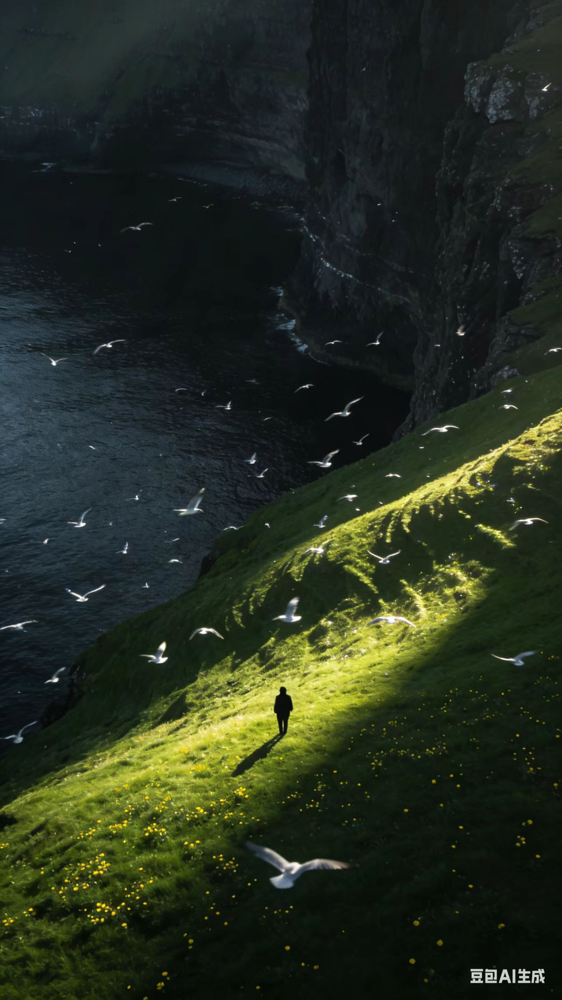
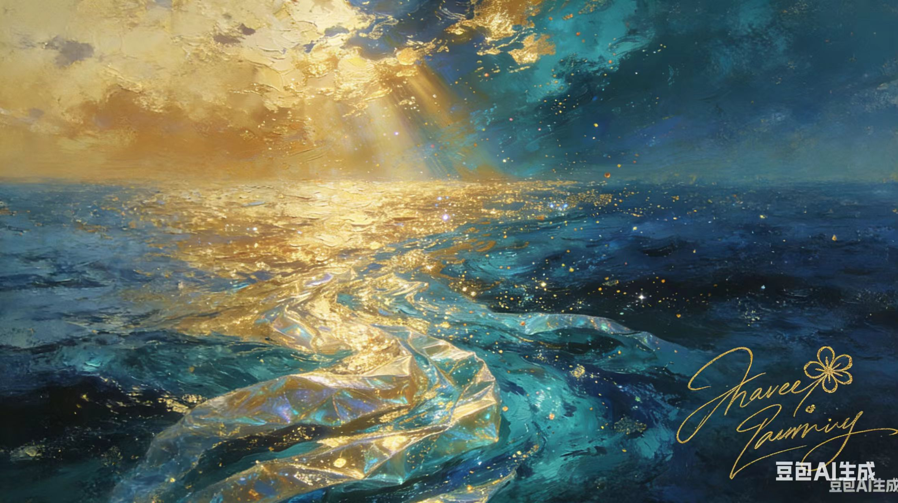
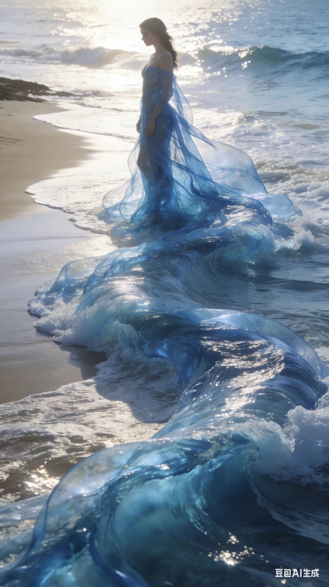

Stillness at the margin of land and sea is how the world thinks without words.
What must depart with the light was never ours to own—only to behold while it lasts.

The first light does not argue with the dark; it simply reveals what was already there, waiting.

We are the shape water takes for a moment—then releases, unchanged in essence.